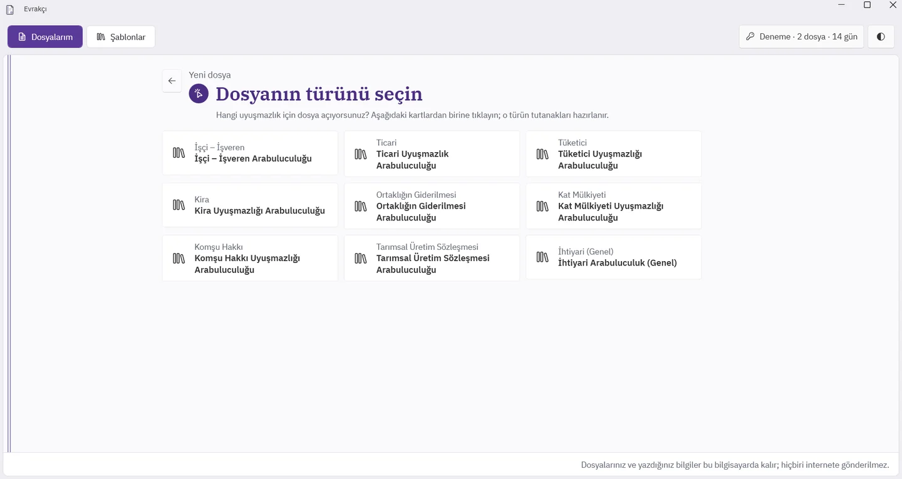
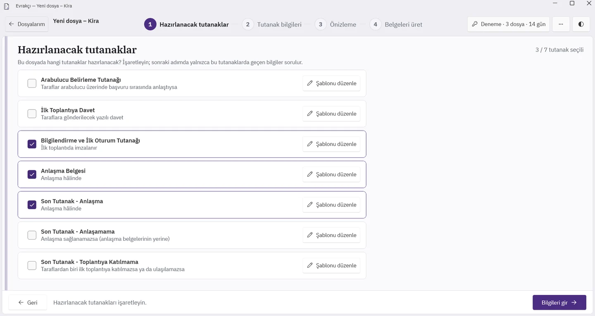
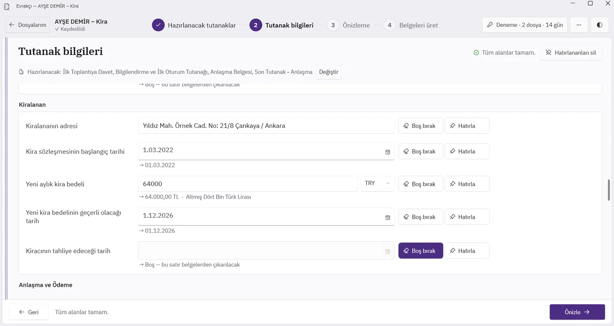
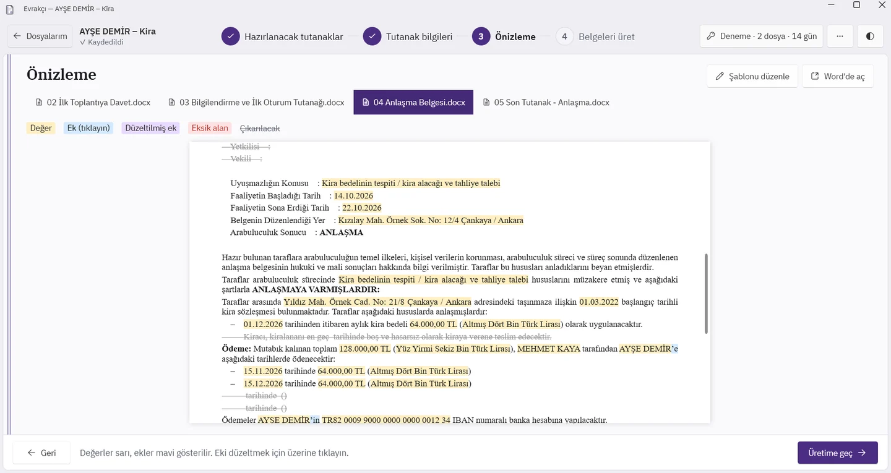
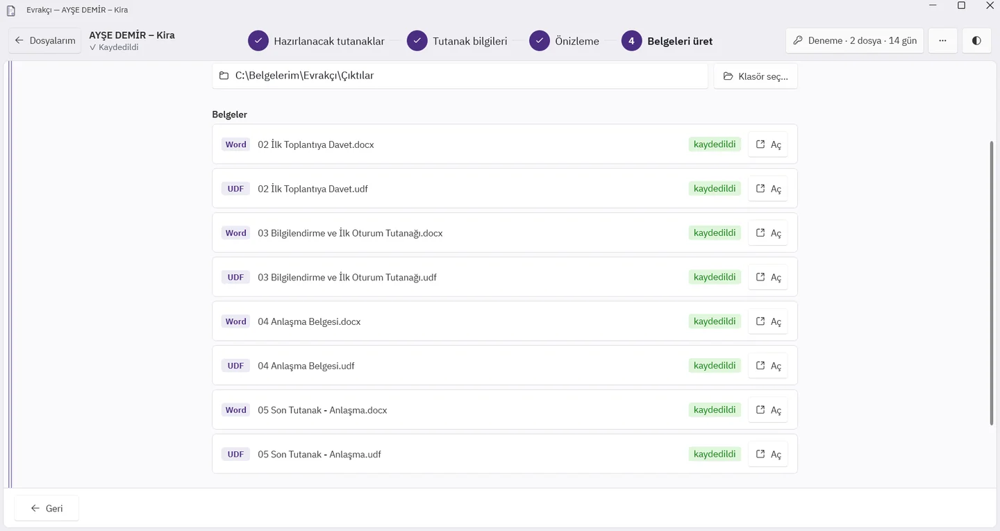
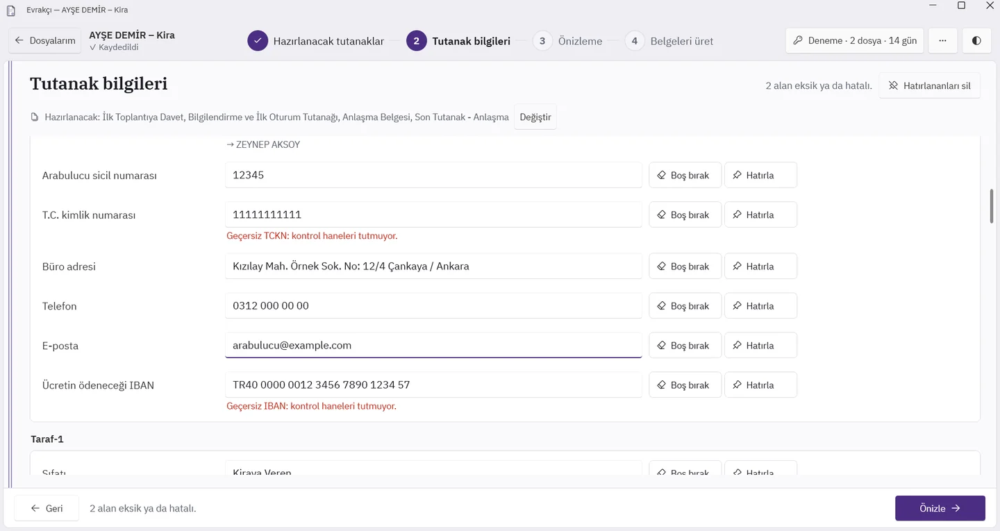
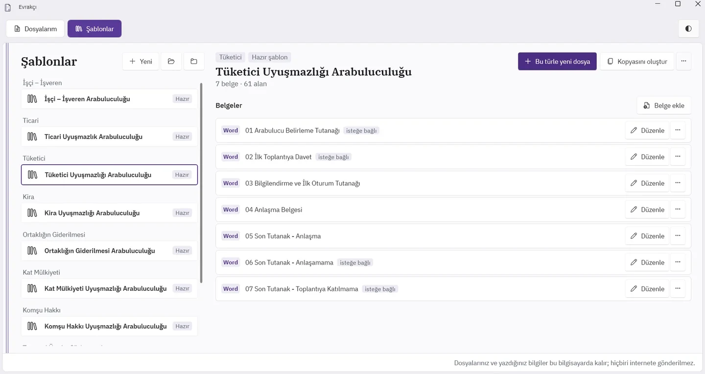
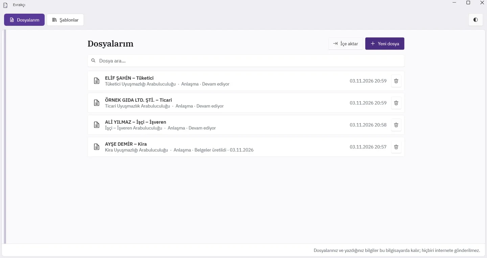
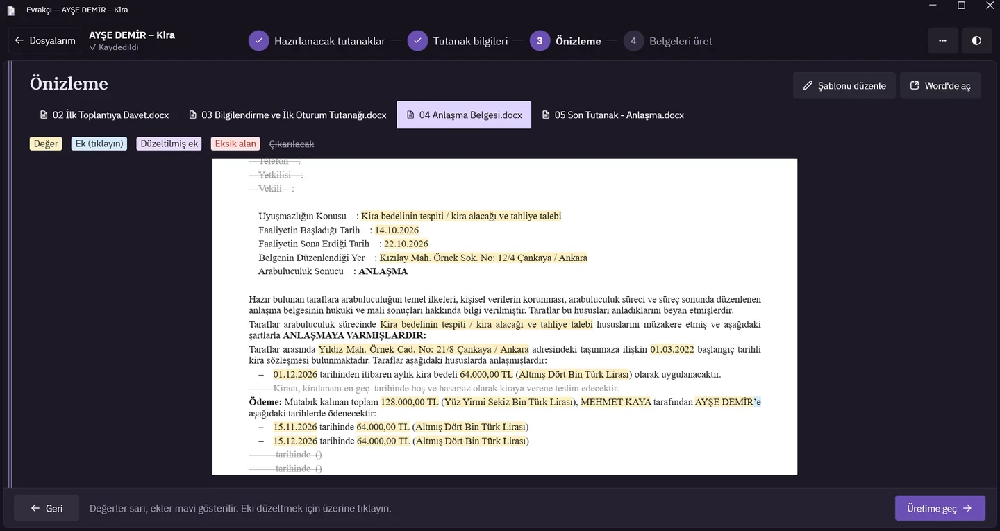

Arabuluculuk dosyanızın bütün evrakı, tek formdan.
Tarafları, tutarları, tarihleri bir kez yazarsınız. Evrakçı davet mektubundan son tutanağa kadar seçtiğiniz bütün belgeleri doldurur; Türkçe ekleri doğru çeker, tutarları yazıyla yazar, Word ve UYAP (.udf) biçiminde kaydeder.
Ücretsiz ve açık kaynak: kayıt, deneme süresi ya da lisans yok. Windows 10 ve 11 için, kurulum dosyası 71 MB. Kaynak kodu GitHub’da.
Kurulum dosyası henüz kod imzalı değil. Chrome “şüpheli indirme engellendi” derse: Ctrl+J ile İndirilenler’i açın, dosyanın yanındaki menüden “Yine de sakla”yı seçin. Windows uyarı verirse “Ek bilgi” → “Yine de çalıştır”. Neden?
- 9 arabuluculuk türü
- İşçi–işverenden kira ve ticariye hazır setler
- Her türde 7 şablon
- Davet, bilgilendirme, anlaşma ve üç çeşit son tutanak
- Word ve UYAP
- .docx ve .udf, ikisi birden tek tıkla
- Ücretsiz, açık kaynak
- Bilgiler bilgisayarınızdan çıkmaz
Aynı bilgileri dört belgeye ayrı ayrı yazmak hem zaman alır hem hata bırakır.
Bir dosyanın evrakını elle hazırlamak genellikle 30 ile 45 dakika sürüyor. O sürenin önemli bir kısmı yazmaya değil, aynı bilginin her belgede doğru geçtiğini kontrol etmeye gidiyor.
- Eski dosyadan kopyalanan belgeÖnceki müvekkilin adı bir paragrafta kalırsa yanlış kişiye ait bilgi başka bir dosyaya girmiş olur.
- Ek uyumu“Ayşe Demir’ın”, “Kaya’a” gibi hatalar her ad değişikliğinde yeniden kontrol ister.
- Yazıyla tutar64.000 TL’nin yazıyla karşılığı her belgede aynı olmalı; taksitlerin toplamı anlaşma tutarını tutmalı.
- İki biçimWord’de hazırlanan belgenin UYAP için ayrıca düzenlenmesi gerekir.
Ödemeler Ayşe Demir’ın AYŞE DEMİR’in hesabına yapılacaktır.
Kira bedeli 64.000,00 TL (Altmışdört bin lira Altmış Dört Bin Türk Lirası)
Arabulucu ZEYNEP AKSOY’un IBAN numaralı hesabına
Evrakçı’nın önizlemesinde girdiğiniz değerler sarı, kendiliğinden uyarlanan ekler mavi görünür. Örnekteki adlar uydurmadır.
Ayda kaç saatiniz evrak hazırlamaya gidiyor?
Kendi rakamlarınızı girin. Sonuçlar tahmindir; varsayımlar aşağıda yazıyor.
Yılda geri kazanacağınız süre, tahmini
Yaklaşık 11 iş günü (8 saatlik).
| Ayda | Yılda | |
|---|---|---|
| Kazanılan süre | 7,5 saat | 90 saat |
| O sürenin değeri | 3.750 TL | 45.000 TL |
Hesap: dosya sayısı × (elle süre − Evrakçı ile süre). Yıllık rakam 12 ay üzerinden. Gerçek süreniz belge sayısına, yazma hızınıza ve dosyanın karmaşıklığına göre değişir.
Yeni dosyadan imzaya hazır belgelere beş adım
Ekranlar uygulamanın kendisinden; Kira türünde örnek bir dosya.
-
Türü seçin
İşçi–işveren, ticari, tüketici, kira, ortaklığın giderilmesi, kat mülkiyeti, komşu hakkı, tarımsal üretim sözleşmesi ve ihtiyari arabuluculuk için hazır setler gelir.

-
Hazırlanacak tutanakları işaretleyin
Anlaşma varsa anlaşma belgesi ve son tutanak, yoksa anlaşamama tutanağı. Form yalnızca işaretlediğiniz belgelerde geçen bilgileri sorar.

-
Bilgileri bir kez yazın
Değer girerken alanın altında belgeye nasıl yazılacağını görürsünüz:
64.000,00 TL · Altmış Dört Bin Türk Lirası
. Boş bıraktığınız satırlar belgeden çıkarılır.
-
Önizlemede kontrol edin
Değerler sarı, Türkçe ekler mavi işaretlidir; bir eke tıklayıp elle düzeltebilirsiniz. Belgeden çıkacak satırların üstü çizilidir.

-
Belgeleri üretin
Word, UYAP ya da ikisi birden. Dosya adları ve klasör kendiliğinden verilir; var olan bir dosyanın üzerine yazmadan önce sorulur.

Bir kira dosyası, baştan sona
Tür seçimi, form, önizleme ve üretim; kesintisiz tek bir kayıttan kurgulandı. Form doldurma bölümü 12 kat hızlandırıldı, gerisi gerçek hızında.
1 dakika 35 saniye, ses yok; açıklamalar videonun altındaki şeritte yazılı. Videodaki adlar, kimlik ve IBAN numaraları örnektir.
Belgeyi doğru yazan ayrıntılar
Türkçe ek uyumu
Kesme işaretli ekler değere göre yeniden yazılır: AYŞE YILMAZ’ın, ALİ KAYA’ya, TL’nin, 2026’da.
Tutarlar yazıyla
Para alanları rakamla ve yazıyla aynı anda yazılır; kuruşlar dahil.
TCKN ve IBAN kontrolü
Kontrol hanesi tutmayan bir kimlik ya da IBAN numarası girildiğinde alan hemen uyarır.
Dosya kontrolleri
Taksitlerin toplamı anlaşma tutarını tutmazsa ya da tarihler sırasız girilirse belge üretilmez.
Hatırlanan bilgiler
Adınız, sicil numaranız, büro adresiniz ve IBAN’ınız bir kez kaydedilir, her yeni dosyaya kendiliğinden gelir.
Kendiliğinden kayıt
Kaydet düğmesi yoktur; yazdığınız her şey anında saklanır. Dosyaya döndüğünüzde kaldığınız adımdan devam edersiniz.
Şablon düzenleyici
Metni uygulamanın içinde, Word gerekmeden düzeltin. Bir metni seçip değişken yapabilir, kendi setinizi oluşturabilirsiniz.
UYAP biçimi
Üretilen .udf dosyaları UYAP Doküman Editörü’nde açılır. Word ve UDF aynı şablondan üretildiği için bir düzeltme ikisine birden yansır.
Kendiliğinden güncelleme
Yeni sürümler arka planda indirilir, uygulamayı kapattığınızda kurulur.




Müvekkil bilgileri bilgisayarınızda kalır
Kişisel verilerin korunması arabulucunun sorumluluğundadır. Evrakçı bu yüzden belgeleri internete bağlanmadan üretir ve hiçbir dosya içeriğini dışarı göndermez.
Bilgisayarınızda kalanlar
- Formda yazdığınız bütün bilgiler ve üretilen belgeler.
- Dosyalarınız Windows kullanıcınıza bağlı olarak şifreli saklanır (Windows DPAPI). Başka bir bilgisayarda ya da başka bir kullanıcıyla açılamaz.
- Bir dosyayı başka bilgisayara taşımak için dışa aktarırken şifre koyabilirsiniz (AES-256).
- Kullanım istatistiği ya da telemetri toplanmaz.
İnternete gidenler
- Güncelleme: izin verirseniz açılışta yeni sürüm olup olmadığı sorulur, varsa indirilir. İstekte yalnızca sürüm numarası gider. İzin ilk açılışta sorulur, menüden istediğiniz zaman kapatabilirsiniz.
- Bunun dışında uygulama internete bağlanmaz. Lisans, hesap ya da kayıt yoktur.
- Kaynak kodu açık olduğu için bu söylediklerimizi kodda kendiniz doğrulayabilirsiniz. Bu site de çerez ya da ziyaretçi takibi kullanmaz.
Ücretsiz ve açık kaynak
Evrakçı herkesin kullanabileceği, kodu açık bir araç. Deneme süresi, lisans ya da gizli ücret yok; bütün özellikler herkese açık.
Kullanın
0 TL
- Sınırsız dosya ve belge
- Bütün türler, Word ve UYAP
- Kayıt, kart ya da e-posta istenmez
- Güncellemeler kendiliğinden gelir
İnceleyin
AGPL-3.0
- Bütün kaynak kodu GitHub’da
- Verilerinizin nereye gittiğini kodda görün
- İsterseniz kendiniz derleyin
- Değiştirip dağıtan da kodu açık tutar
Katkı verin
Birlikte
- Şablon metinleri için öneri
- Yeni arabuluculuk türü ya da belge
- Hata bildirimi
- Kod katkısı
Sık sorulanlar
Gerçekten ücretsiz mi? Bir sınırı var mı?
Evet, tamamen ücretsiz. Dosya, belge ya da süre sınırı yoktur; kayıt ya da lisans istenmez. Evrakçı AGPL-3.0 lisansıyla açık kaynak olarak yayımlanır.
Açık kaynak olması benim için ne anlama geliyor?
Uygulamanın bütün kodu GitHub’da herkese açıktır. Müvekkil bilgilerinin bilgisayarınızdan çıkmadığını isteyen herkes kodda doğrulayabilir. Proje bir gün durursa bile kod ortada kalır; başkası sürdürebilir.
Üretilen .udf dosyaları UYAP’ta açılıyor mu?
Evet. Dosyalar UYAP Doküman Editörü’nün kullandığı yapıda yazılır; Kira setinin yedi şablonundan üretilen dosyaların editörde açıldığı denendi. UDF biçiminin resmî bir belgesi olmadığından, editörün yeni sürümlerinde bir sorun görürseniz bize bildirin. Evrakçı’nın Adalet Bakanlığı ya da UYAP ile bir bağlantısı yoktur.
Hazır metinleri olduğu gibi kullanabilir miyim?
Hazır metinler 6325 sayılı Kanun ve Arabuluculuk Yönetmeliği esas alınarak hazırlanmış genel taslaklardır. Kendi uygulamanıza göre gözden geçirmenizi öneririz; her metni uygulamanın içinde ya da Word’de değiştirebilir, değişikliği bütün yeni dosyalarda kullanabilirsiniz.
Kendi Word şablonlarımı kullanabilir miyim?
Evet. Kendi belgenizi sete ekleyip içindeki adları, tarihleri ve tutarları seçerek değişkene çevirebilirsiniz. Doldurulmuş eski bir belgeden şablon yapmak da bu şekilde olur.
İnternet bağlantısı gerekiyor mu?
Hayır. Belgeler internetsiz üretilir. Uygulama yalnızca yeni sürüm olup olmadığına bakmak için bağlanır; bağlantı yokken de her şey çalışır.
Chrome indirmeyi engelliyor ya da Windows “bilinmeyen yayımcı” uyarısı veriyor.
Kurulum dosyası henüz kod imzalama sertifikasıyla imzalı değil. Tarayıcılar ve Windows, imzasız ve yeni yayınlanmış programlarda bu yüzden uyarı gösterir; dosyada bir sorun olduğu anlamına gelmez.
Chrome: Ctrl+J ile İndirilenler sayfasını açın, engellenen dosyanın yanındaki menüden “Yine de sakla”yı seçin. Edge: İndirilenler’de dosyanın menüsünden “Tut” → “Yine de tut”. Windows SmartScreen: “Ek bilgi”ye, ardından “Yine de çalıştır”a tıklayın.
Kurulum yönetici izni istemez ve yalnızca sizin kullanıcınıza yapılır. Program, herkesin görebildiği açık kaynak koddan GitHub Actions ile derlenir; isterseniz kendiniz de derleyebilirsiniz.
Mac ya da Linux sürümü var mı?
Şimdilik yalnızca Windows 10 ve Windows 11 için. Kod açık olduğu için başka platformlara taşıma katkılarına açığız.
Bilgisayarımı değiştirirsem dosyalarım ne olur?
Dosyalarınızı ⋯ menüsünden dışa aktarıp (isterseniz şifreyle) yeni bilgisayarda “İçe aktar” ile açabilirsiniz. Uygulamayı yeni bilgisayara kurmak için hiçbir şey gerekmez.
Bir hata buldum ya da şablon önerim var.
GitHub’da bildirin ya da aşağıdaki formu kullanın. Lütfen gerçek müvekkil bilgisi, TCKN ya da IBAN paylaşmayın; örneklerde uydurma bilgiler kullanın.
Sorular ve öneriler
Formu gönderin, en kısa sürede e-postayla dönelim. Hata bildirimi ve şablon önerileri için GitHub da kullanabilirsiniz.
Doğrudan yazmak isterseniz:
contact@cahitarslan.com
Bir sonraki dosyanızı Evrakçı ile hazırlayın.
Ücretsiz ve açık kaynak; kayıt ya da lisans istenmez.